THE INDEX — πέντε κατευθύνσεις
Πρωτότυπα σχεδιασμού για τη σελίδα /blog-module/blog/. Όλα χρησιμοποιούν το ίδιο πραγματικό περιεχόμενο (423 ιστορίες), την ίδια πλοήγηση και τις ίδιες γραμματοσειρές και χρώματα του site. Δεν είναι δημοσιευμένα. Τα στιγμιότυπα είναι από πραγματικό browser, στα 1440 και 390 px· το κουμπί θέματος αλλάζει φωτεινά ↔ σκούρα.
Επιλογή κατεύθυνσης: απόφαση του ιδιοκτήτη. Η αξιολόγηση του ανεξάρτητου reviewer βρίσκεται στο REVIEW.md.
Σήμερα
Το σημερινό THE INDEX (παραγωγή)
Η ζωντανή σελίδα στις 3 Νοεμβρίου 2026, ως σημείο αναφοράς.
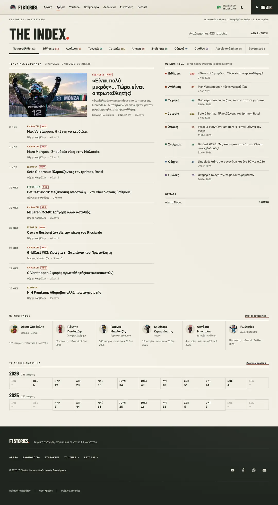
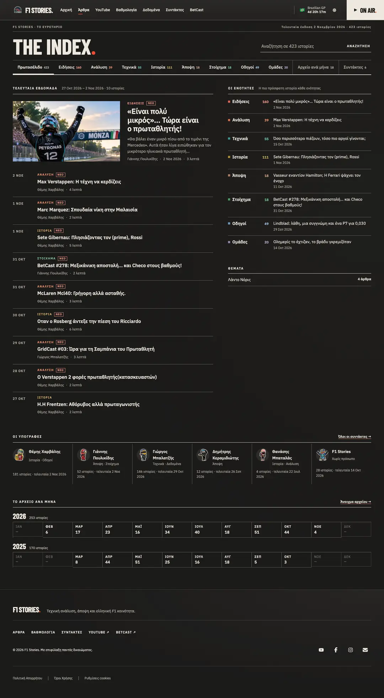
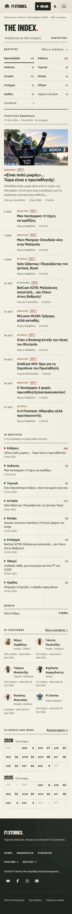
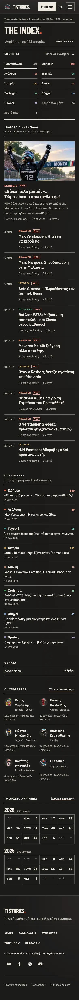
A
The Paddock Continuation
Το επόμενο κεφάλαιο της αρχικής: σκούρο εισαγωγικό θέμα, LATEST. wire με μεγάλες ημερομηνίες, TECHNICAL. και THE ARCHIVE. Βασική κίνηση: άγκυρες ενοτήτων.
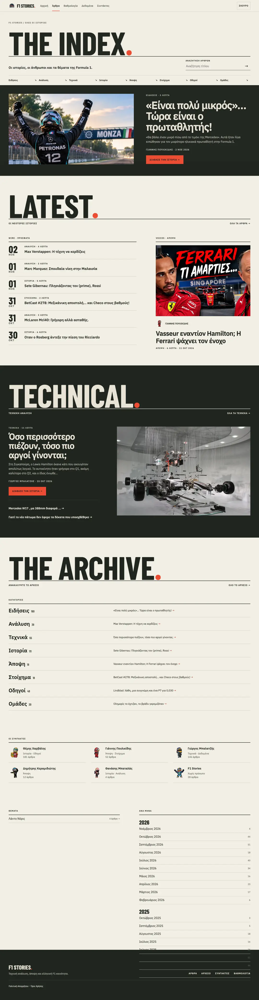
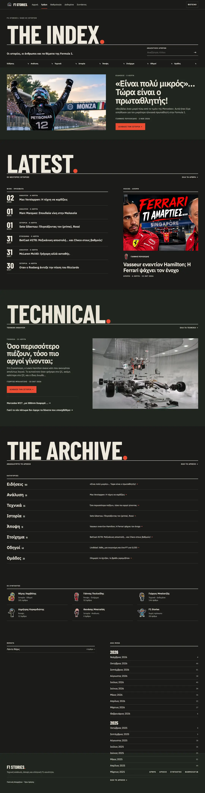
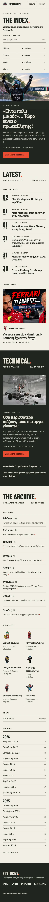
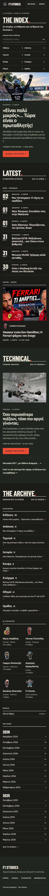
B
The Cover Library
Ένας χώρος εξωφύλλων σαν κεφαλίδα άρθρου, με ασύμμετρο φύλλο επαφής. Βασική κίνηση: επιλογή εξωφύλλου για προεπισκόπηση.
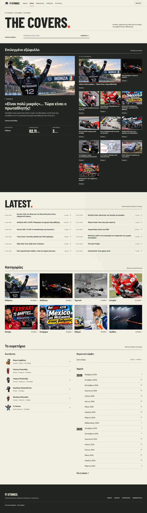
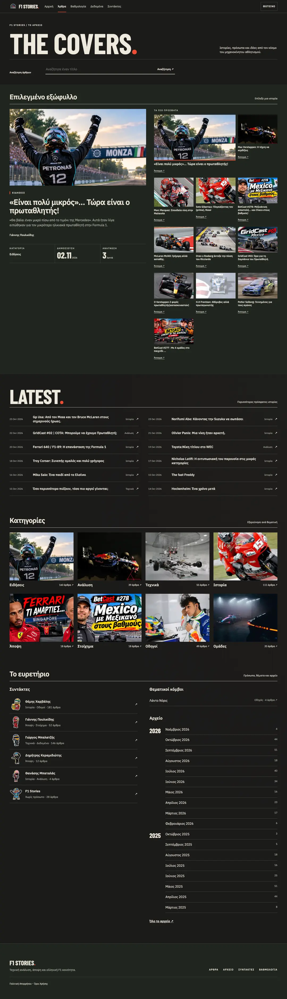
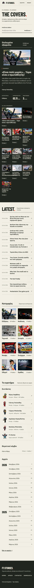
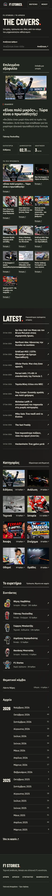
C
The Reading Desk
Το περιβάλλον ανάγνωσης των άρθρων στην ανακάλυψη: στενή στήλη, αναζήτηση πρώτα, λίγες εικόνες. Βασική κίνηση: αναζήτηση τίτλου.
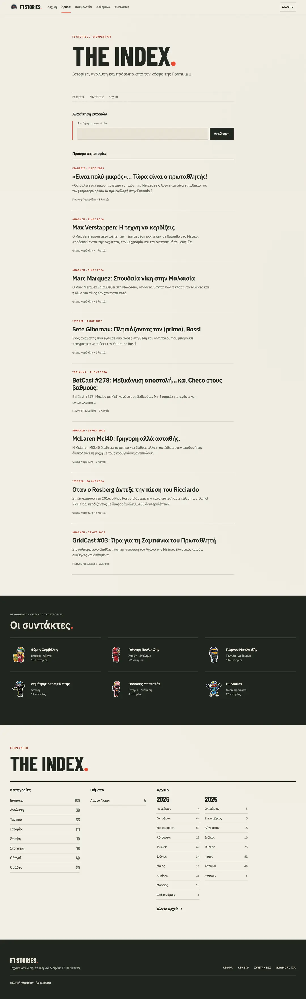
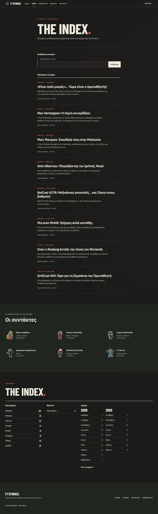
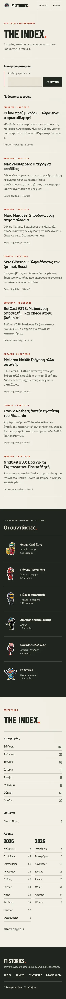
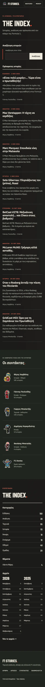
D
The Newsroom
Πυκνό, ιεραρχημένο πρωτοσέλιδο: κύριο θέμα / ρεπορτάζ / ανάλυση, ζώνη αρχείου, ενότητες. Βασική κίνηση: άνοιγμα ενότητας.
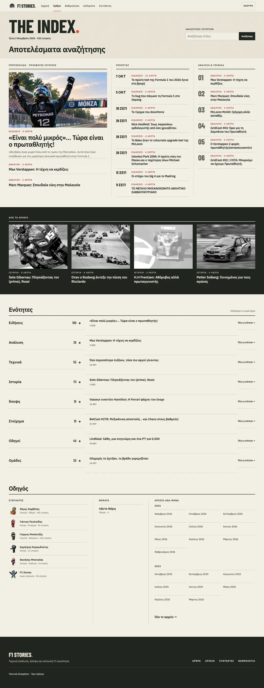
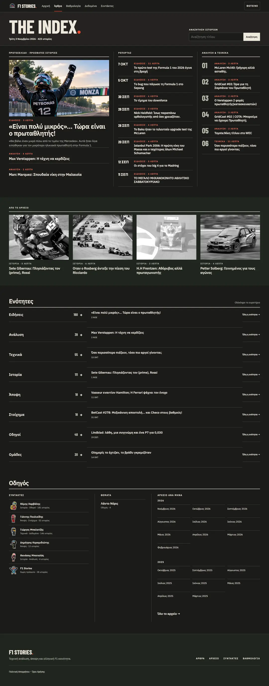
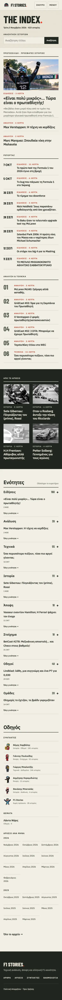
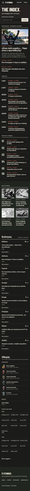
E
The Chronicle
Η ιστορία των δημοσιεύσεων ως αρχιτεκτονική: πρόσφατο θέμα, μήνας ανά ημέρα, ευρετήριο ετών. Βασική κίνηση: επιλογή μήνα.
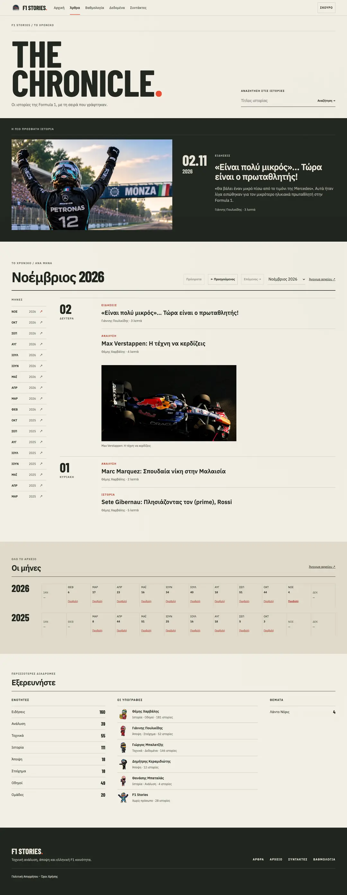
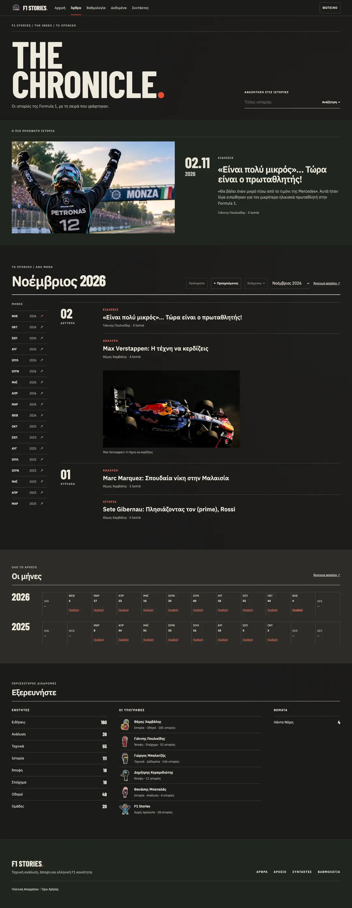
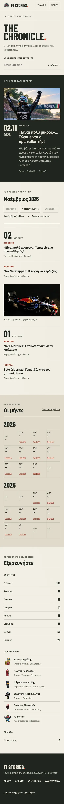
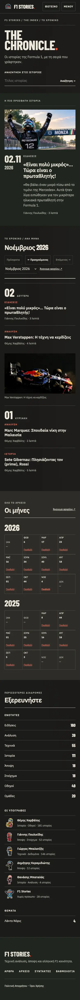